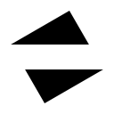

Welcome
After the extension is enabled, the native scroll bar of the webpage will disappear and be replaced by a simpler floating scroll bar. For more personalized options (change the color of the scroll bar, etc.), please click the extension icon above to view the Function Settings Options, and also bring the following functions:
Click on the rightmost side of the webpage to quickly scroll to the top or bottom of the webpage.
Click on the leftmost side of the webpage to quickly turn the page up and down.
When the scroll bar on the right is not displayed, there will be a thin line at the top of the page to show the current browsing position.
Double-click the webpage to mark the current browsing position, and a directory will be automatically generated at the same time. Click to reach the content area, or press Ctrl to switch.
PS: Web pages opened before the extension installation need to be refreshed before the extension function can be used.